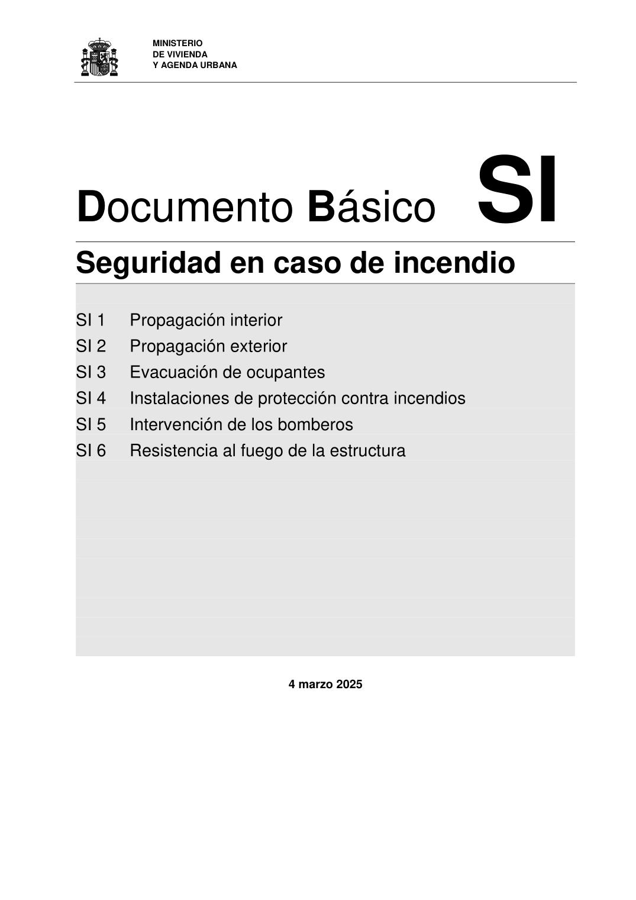

DB-SI · Fragmento de PDF p1 · versión 2025-03-04 · capa oficial
Formatos: JSON compacto · Markdown · PDF fuente
Ámbito del documento · texto del ámbito · documento y tablas
ID técnico a0003 · PDF pág. 1-2 · jerarquía no validada por persona · no es capítulo: fragmento_portada · padre: raíz · literal original en el contenido: «4 marzo 2025»
4 marzo 2025 Documento Básico SI Seguridad en caso de Incendio 2 Disposiciones normativas publicadas en el Boletín Oficial del Estado El articulado de este Documento Básico fue aprobado por el Real Decreto 314/2006, de 17 de marzo (BOE 28-marzo-2006) y posteriormente ha sido modificado por las siguien- tes disposiciones: - Real Decreto 1371/2007 de 19 de octubre (BOE 23/10/2007). - Corrección de errores y erratas del Real Decreto 314/2006 de 17 de marzo (BOE 25/01/2008). - Orden VIV/984/2009 de 15 de abril (BOE 23/04/2009). - Real Decreto 173/2010 de 19 de febrero (BOE 11/03/2010). - Sentencia del TS de 4/5/2010 (BOE 30/07/2010) - Real Decreto 732/2019 de 20 de diciembre (BOE 27/12/2019) - Real Decreto 164/2025 de 4 de marzo (BOE 10/04/2025) Documento Básico consolidado Esta versión del Documento Básico es un texto consolidado a partir de las sucesivas modificaciones que se han realizado en el Documento Básico a través de las disposicio- nes publicadas en el BOE. Este texto consolidado no tiene valor jurídico.

PDF fuente redistribuible: copia fiel enlazada en esta página (SHA256 verificado).